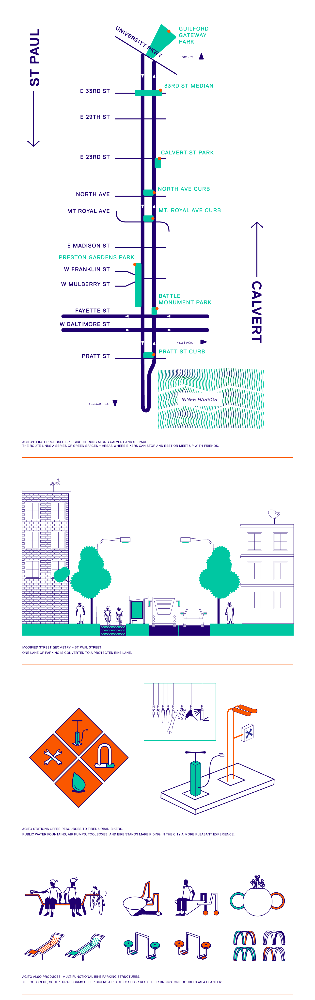
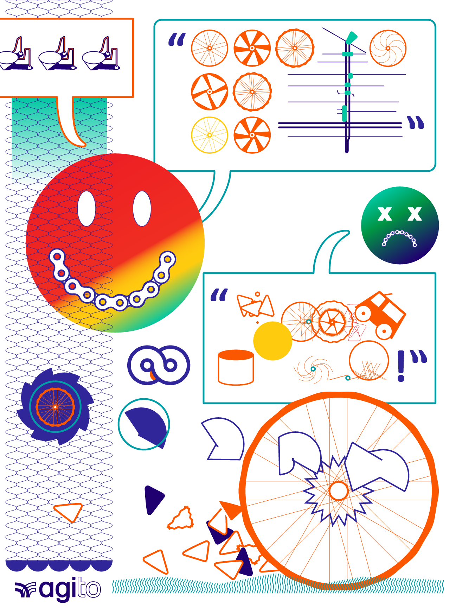
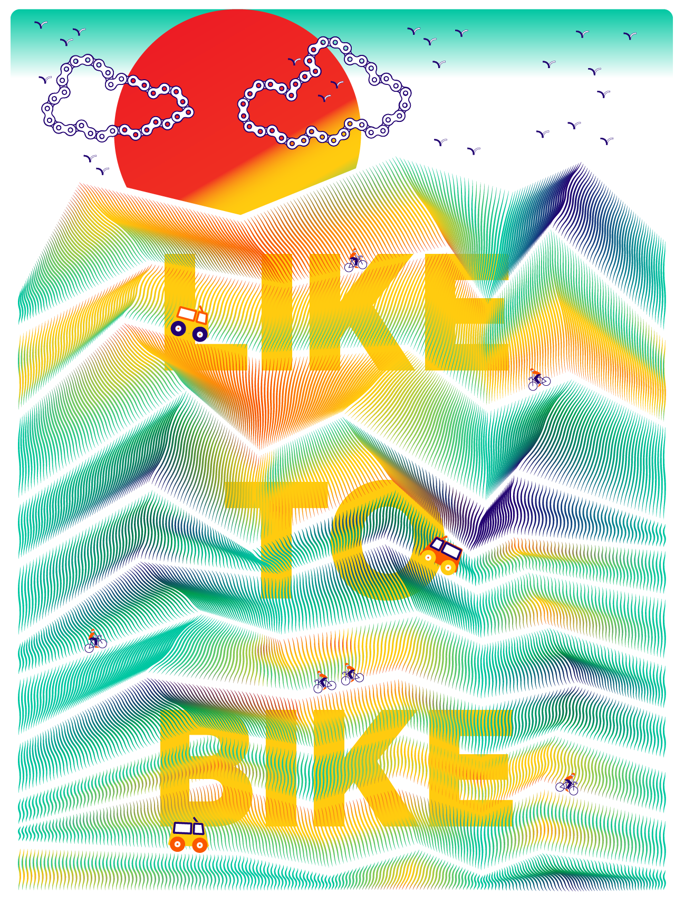

Agito is a proposal to improve Baltimore City's biking infrastructure through the creation of dedicated cycling corridors, reconfigured street geometry, and multi-purpose bike locking structures.

Posters created to develop the project's visual language.

